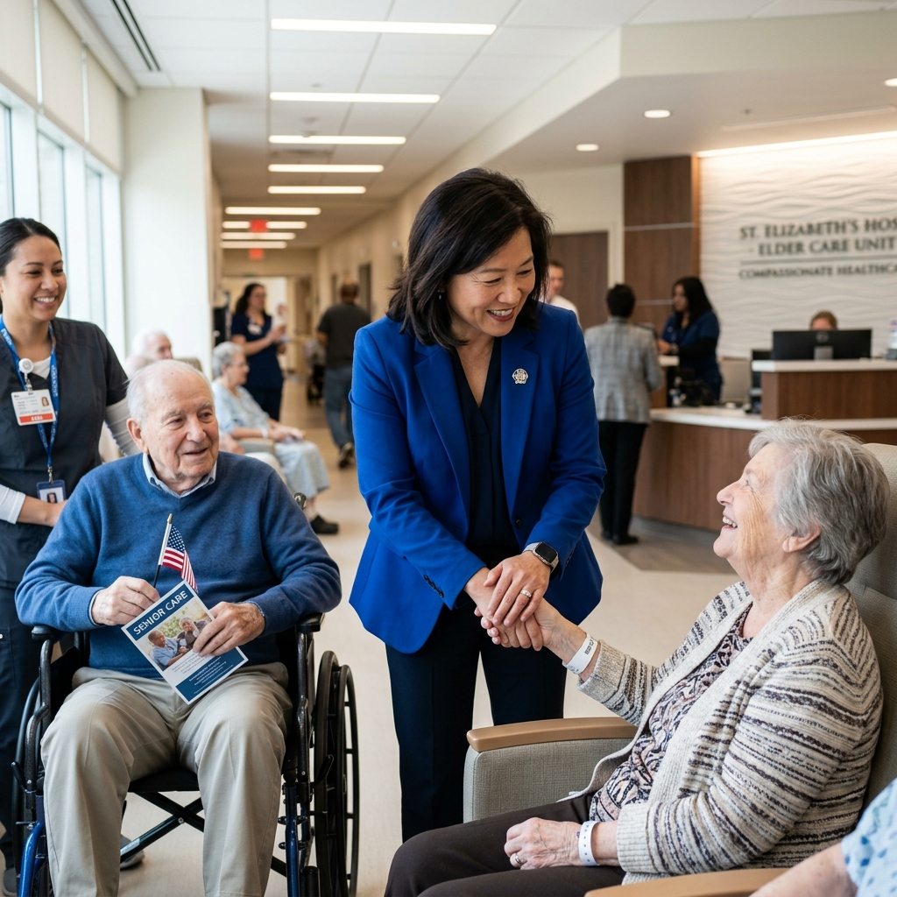

Meet Senator Marcus Vance
A dedicated public servant committed to bringing integrity, economic opportunity, and collaborative governance to our district.
Authentic Unity in Civic Leadership

A Track Record of Results, Not Rhetoric
Marcus Vance has spent over fifteen years working alongside community organizers, labor leaders, and local business councils to solve hard problems.
From securing $45M in municipal infrastructure upgrades to co-authoring bipartisan legislation protecting clean water standards, Marcus believes government should serve people, not political parties.
A Lifetime of Dedicated Service
Key moments that shaped Marcus Vance's commitment to public policy.
2010
Public Interest Counsel
Represented families facing unfair housing evictions and wage theft in municipal courts.
2015
City Council President
Passed 100% budget transparency ordinances and expanded youth community centers.
2020
State Senator
Chaired the Clean Energy & Infrastructure Committee, authoring 14 major legislative bills.
2026
Senate Campaign
Leading a statewide grassroots movement for civic integrity, education, and prosperity.
Guiding Values
The core values that direct every decision we make in the legislature.

100% Transparency
Open schedules, accessible townhalls, and public campaign finance reporting.

Bipartisan Action
Working across party lines to achieve common-sense legislative solutions.
Fiscal Responsibility
Protecting taxpayer dollars with prudent spending and balanced budgets.

Compassionate Care
Prioritizing families, seniors, veterans, and vulnerable community members.